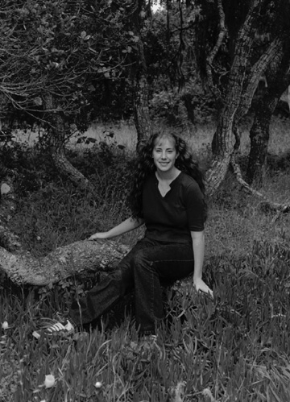
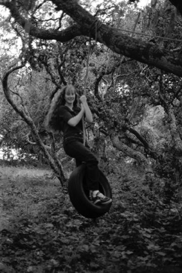
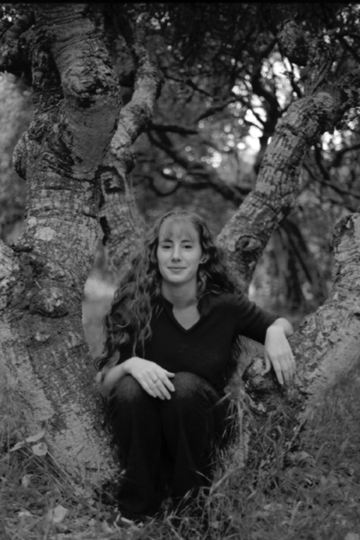

|  |  |  |
Carrie a sophomore at CSUMB is majoring in Human Communications with an emphasis in pre-law and a minor in Japanese. ~ Originally from Lodi, California Carrie has ambitions of one day opening her own form. ~ Carrie believes one of the greatest things about the CSUMB community is the opportunity to get involved. ~ Currently active in Rugby, the Multicultural Club, Student Voice, and Inter Club Council Carrie or Red as her rugby teammates call her keeps herself busy.
- These images were taken in the field located behing the TAT building. Taken with Kodak CN400 the quality is unfortuantly low.I believe the f-stop used with most of the images 11.